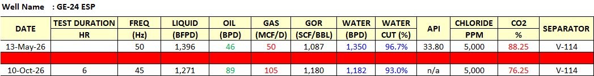

Objective: Start Up ESP after Wellservice.
📅 Oct 4 – Oct 10
📍 ESP Start Up
Oct 4Started commissioning GE-24 ESP at 14.00 with freq. 45 Hz. Estimate rate 1,632 BLPD. Last chloride 2,700 & pH 5. Still flowing to rig tank. Jumper line to GE-5 (shut in well) already connected.
Oct 5Liquid properties: WC 95.3-97.3%, chloride 9,500 ppm, pH 7. Switched well to system at 11.45 through GE-5 flowline.
Oct 6–8Continue monitoring ESP performance. Water cut monitoring: 87.5% (Oct 7), 89.9% (Oct 8). Rig moving out completed, separator V-114 moved. Re-install permanent wellhead spool in progress.
Oct 9–10Water cut: 79.8% (Oct 9). Installation wellhead spool completed. At 16.00 switch flow thru permanent line to system. Test result: Liquid 1,271 BFPD, Oil 89 BPD, Gas 105 MCFD, Water 1,180 BWPD, WC 93.0%, Gain 43 BOPD vs previous test.

📊 Hasil testing GE-24 ESP — October 2026
📌 Plan:- Continue monitor by conducted test